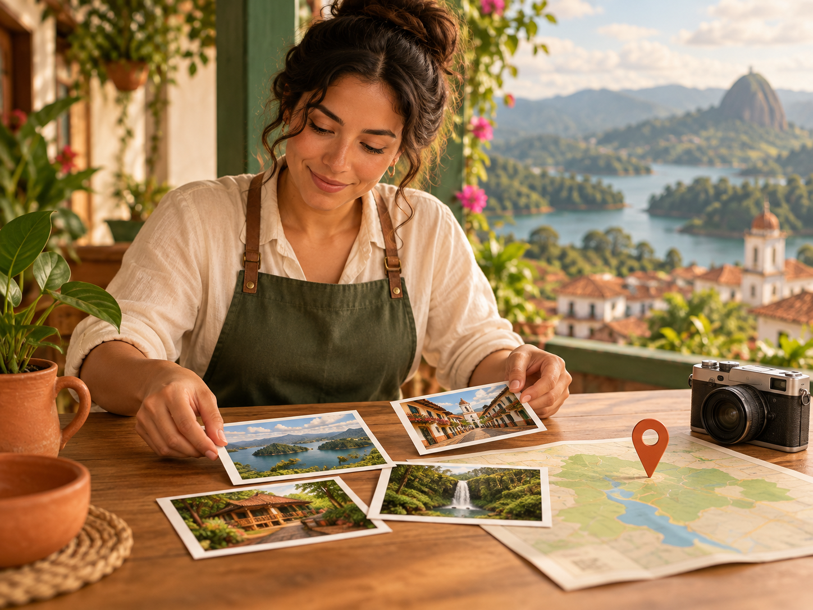

Interest registration
The owner or representative leaves the basic business details and a way to get in touch.
How it works
The process begins with a request and requires review before a search card or business page can become public.

The owner or representative leaves the basic business details and a way to get in touch.
We check that the request has the necessary information and discuss the business and the destination.
If the process moves forward, we gather text, authorised photos and contact details. We also define the plan that applies to your business.
First you review a preview. Then the search-results card and your business’s own page are published once the information is approved.
In destination results
A brief presentation so travellers can discover your offering.
When opening your result
Extended information, authorised photos and confirmed contact channels.
Your brand · Your offering · Your contact